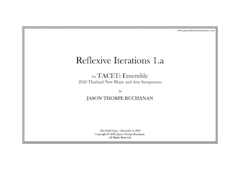

VIEW SCORE:
VIEW SCORE:
ABOUT THE WORK:
-
Reflexive Iterations 1.a (2020)
-
Instrumentation: tenor saxophone, bass clarinet, percussion, violin, cello, and analog electronics
-
Dedication: For the TACETi Ensemble
-
Commission & Awards: Commissioned by Thailand New Music & Arts Symposium
-
World Premiere: Thailand New Music and Arts Symposium, Bangkok Arts and Culture Centre, Thailand - December 20, 2020
-
Purchasing information: Perusal PDF Score: $20; Score and Parts: $100
-
Contact: jasontbuchanan[at]gmail.com
-
PROGRAM NOTES:
Reflexive Iterations 1.a was written for the TACETi Ensemble to be premiered during the 2020 Thailand New Music and Art Symposium. The work expands upon the “no-input” mixing tradition in noise music, routing input from various contact microphones through an analog system with which the performers control signal flow through both physical proximity and electrical attenuation. The mixer/composer manipulates these signals through gain staging, attenuation, and bandpass filters which change the power of different frequency components within the audio spectrum. These are then routed through auxiliary sends to two systems of effect pedals, back into the mixer and a 4-channel car amplifier, and finally out to four discrete speakers. Each speaker emits air pressure waves, which are both perceived by the audience and musicians, as well as fed back through the system again via the same contact microphones which first converted the sound into electrical signals. In other words, they “hear” themselves. The physical behavior of the musicians on stage influence the character and quality of this recursive process based on the position and proximity of the microphones to the speakers, “tuning” and also introducing new, physical noise by touching the microphone or plastic filter against the vibrating speaker cone itself.
In some way this work is in response to the events of 2020 and designed as an antidote to life on the internet. A desire to construct a system dealing with corporeal attributes of physical space—air, sound, bodies—in a way that would not be possible with a digital system. This participatory network requires the musicians to interact with and dynamically engage the signals themselves, exploring the transmission of invisible waves traveling through a real-world space with their own physical gestures. The precise result is unknown to the performers prior to performance—subject to a staggering number of variables—as they iteratively interpret suggested physical actions while reflexively responding in real-time to the ramifications of these actions in an attempt to control a thing that, by its very nature, is precarious and mercurial.
Performances of Reflexive Iterations 1.a

Bangkok Arts and Culture CenterBACC
Bangkok, Thailand